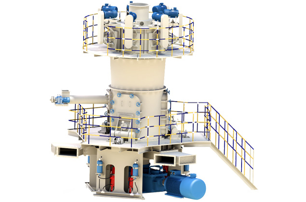
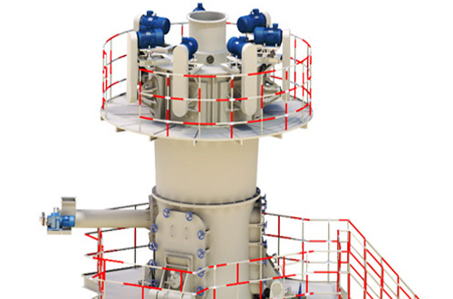
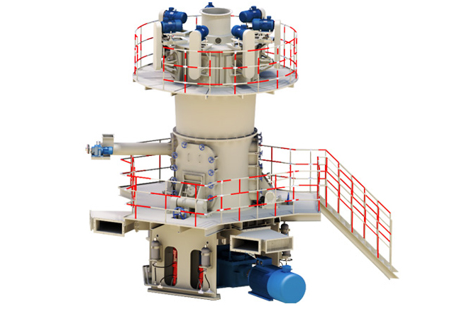

LUM Ultrafine Vertical Roller Mill

LUM Ultrafine Vertical Roller Mill
LUM Series Ultrafine Vertical Roller Mill adopts SBM abundant experience in producing vertical grinding mill and the latest technology from Taiwan &Germany. It sets grinding, drying, classifying and transportation as a whole and has been become the Mainstream equipment in ultrafine grinding industry.
Vertical roller mill is a kind of ideal large grinding equipment, widely used in cement, electric power, metallurgy, chemical industry, non-metallic mineral industries. It sets the crushing, drying, grinding, grading conveying in one, the production efficiency is high, the powdery material can be massive, granular and powder grinding materials required.
- 
- 
- 
+86-21-58386189, 58386176
sbm@stoneminingmachine.com
LUM Ultrafine Vertical Roller Mill Working Principle
The main motor drives the disc through the speed reducer to rotate, and the wind can enter from the air inlet of superfine LUM vertical roller mill, material by screw feeder feeding port falls on the disc center, under the action of centrifugal force, the material from the disc center to the edge of uniform movement, after grinding roller region of the disc, by grinding roller compacted, large the material directly crushed, fine materials were extruded forming material bed of interparticle breakage. Crushed material continues to move to the edge of the grinding disc, a strong current of air until it is wind at ring away, and granular materials with large again fell to the disc to smash, airflow materials through the upper part of the separator, the rotor blade under the effect of coarse particles, back to the grinding disc grinding, fine powder qualified along with the air out of mill, powder collector system was collected, the powder material is collected for ultrafine vertical roller mill of a product. Mixed material of impurities such as iron to the edge of the grinding disc with the movement of materials, due to its own weight and can not be blown up by the wind, falling to the ball mill was installed at the bottom of the inferior vena cava disc scraping plate scraping slag outlet discharge machine.
LUM Ultrafine Vertical Roller Mill for Cement Grinding
LUM ultrafine vertical roller mill is set, drying, grinding, fine powder separating and conveying into a whole, has the advantages of small occupied area, simple process, high grinding efficiency, low energy consumption, low noise, drying capacity, product fineness is easy to adjust, no dust pollution and convenient maintenance, reliable operation and so on, especially in the large grinding process, can fully meet customer demand, the main technical, economic indicators have reached international advanced level. As one of the main equipment of non-metallic minerals powder dry superfine processing technology, vertical milling machine technology in non metal mine industry scale and fine product practice, highlighting the high efficiency, energy saving, environmental protection advantages, and promote the non metallic minerals industry scale, fine product development.
LUM Ultrafine Vertical Roller Mill Feature
- LUM is of little dust and noise, achieving Environmental Protection Request, it is quite environmentally friendly.
- Utilize advanced working principle and reduce the grinding time, as a result, the final products has little iron and the whiteness and purity are raised.
- LUM has excellent grinding-efficiency for the special design of roller shell and grinding plate curve.
- Low investment cost: LUM use PLC/DCS automatic control system, well save the cost of operators.
Technical Data of LUM Ultrafine Vertical Roller Mill
| Model | LUM1125 | LUM1232 | LUM1436 |
|---|---|---|---|
| Wheel diameter（mm） | 1100 | 1200 | 1400 |
| Capacity （t/h） | 5~12 | 7~16 | 8~18 |
| Fineness 400~650Mesh | ~D97 | ~D97 | ~D97 |
| Material Size（mm） | <10 | < 10 | <10 |
| Moisture | <3% | <3% | <3% |
| Main Motor Power（KW） | 250 | 315 | 355 |
| Roller(set) | 3 | 3 | 3 |
| Classifier Motor Power | 15 KWx5 | 15 KWx7 | 15 KWx7 |
Application of LUM Ultrafine Vertical Roller Mill
LUM Series Ultrafine Vertical Roller Mills are widely used in grinding non-flammable and non-explosive materials under 9.3(the Moh's hardness), such as grinding quartz, feldspar, calcite, talcum, barite, fluorite, iron ore, copper ore quartz, slag, cement clinker, zircon sand, fly ash and carborundum, coal, etc.
LUM Ultrafine Vertical Roller Mill is mainly suitable for medium, low hardness, superfine powder processing Mohs hardness of less than or equal to grade 6 non flammable and explosive brittle materials, such as calcite, chalk, limestone, dolomite, carbon black, kaolin,bentonite, mica, talc, magne site, illite, vermiculite, sepiolite, attapulgite stone, rectorite, diatomite, gypsum, barite, fluorite, alunite, graphite, potassium ore,phosphate rock, pumice and other 100 kinds of material, fine powder product size in the 325-3000 project between the arbitrary regulation, yield up to 0.7-7.5 tons per hour.Vertical milling machine full set of configuration includes hammer crusher, bucket elevator, a storage hopper, vibration feeder, micro powder mill, classifier, host frequency duplex cyclone powder collector, pulse high pressure air dust removal system, machine,air compressor, electric control system.
Services
Supply the most current design and technical expertise;Supply parts sales and training service far beyond the initial sale;Your profits with quality parts and expert service.
Related Products
LUM series of ultrafine vertical roller mill, as the foundation of the LM vertical grinding mill, the introduction of Germany superfine vertical grinding roll grinding technology, a new superfine grinding equipment design and development of a professional, large-scale project preparation and other professional applied to all kinds of nonmetal ore grinding and classification, power plant, steel desulfurization with limestone powder grinding slag powder deep processing and the blast furnace coal injection.
SBM Company
With the development of our SBM, we would like to help more and more customers start their business in mining and construction industries, offer them the best solution, much more advanced machinery and better service.
Contact Us
Products
Contact SBM
+86-21-58386189，58386176
sbm@stoneminingmachine.com
Fax: +86-21-58385681
Office Add: No.416 Jianye Road, South Jinqiao Area,Pudong New Area, Shanghai, China.
Postcode: 201201